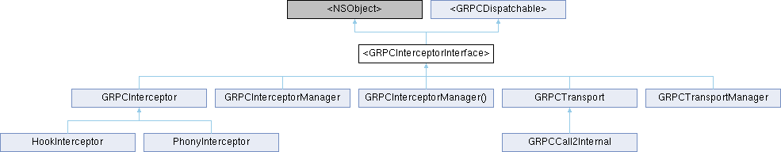

#import <GRPCInterceptor.h>
Inheritance diagram for <GRPCInterceptorInterface>:

Instance Methods | |
| (void) | - startWithRequestOptions:callOptions: |
| (void) | - writeData: |
| (void) | - finish |
| (void) | - cancel |
| (void) | - receiveNextMessages: |
Additional Inherited Members | |
 Properties inherited from <GRPCDispatchable> Properties inherited from <GRPCDispatchable> | |
| dispatch_queue_t | dispatchQueue |
Detailed Description
The GRPCInterceptorInterface defines the request events that can occur to an interceptor.
Method Documentation
◆ cancel
| - (void) cancel |
To cancel the call.
Reimplemented in GRPCInterceptor, and GRPCCall2Internal.
◆ finish
| - (void) finish |
To finish the stream of requests.
Reimplemented in GRPCInterceptor, and GRPCCall2Internal.
◆ receiveNextMessages:
| - (void) receiveNextMessages: | (NSUInteger) | numberOfMessages |
To indicate the call that the previous interceptor is ready to receive more messages.
Reimplemented in GRPCInterceptor, and GRPCCall2Internal.
◆ startWithRequestOptions:callOptions:
| - (void) startWithRequestOptions: | (GRPCRequestOptions *) | requestOptions | |
| callOptions: | (GRPCCallOptions *) | callOptions | |
To start the call. This method will only be called once for each instance.
Reimplemented in GRPCInterceptor, and GRPCCall2Internal.
◆ writeData:
| - (void) writeData: | (id) | data |
To write data to the call.
Reimplemented in GRPCInterceptor, and GRPCCall2Internal.
The documentation for this protocol was generated from the following file:
- src/objective-c/GRPCClient/GRPCInterceptor.h